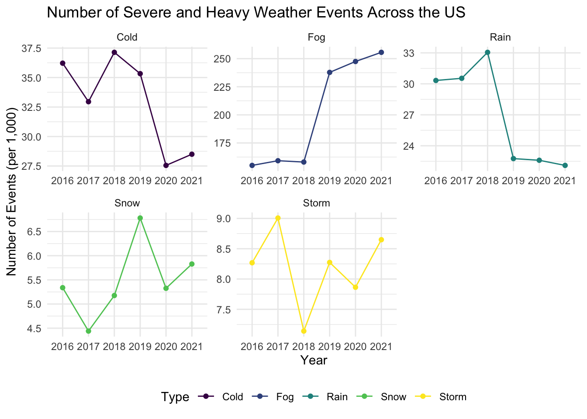
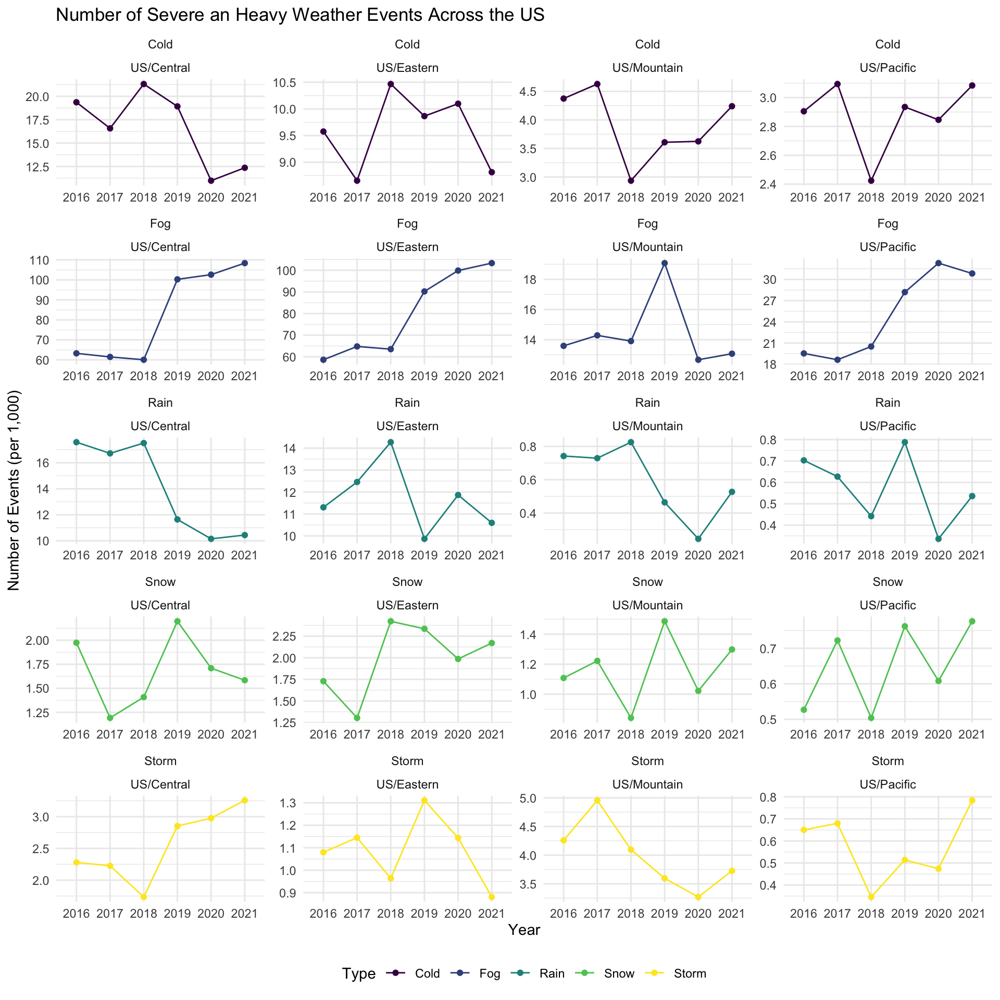
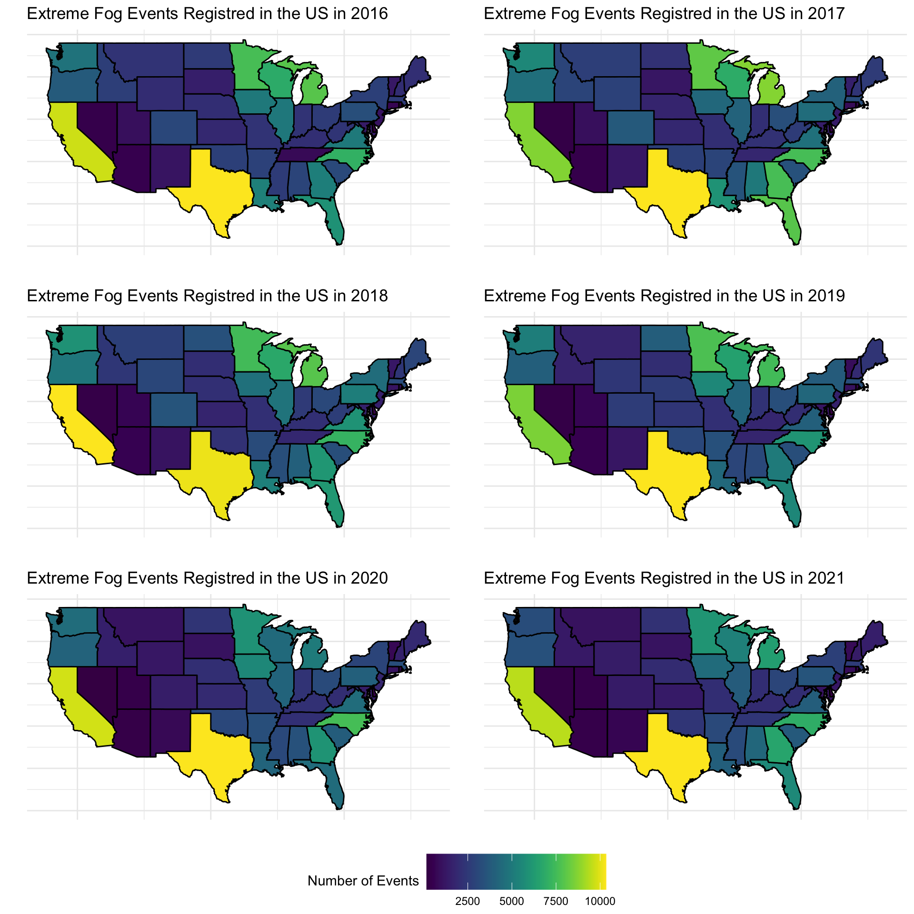
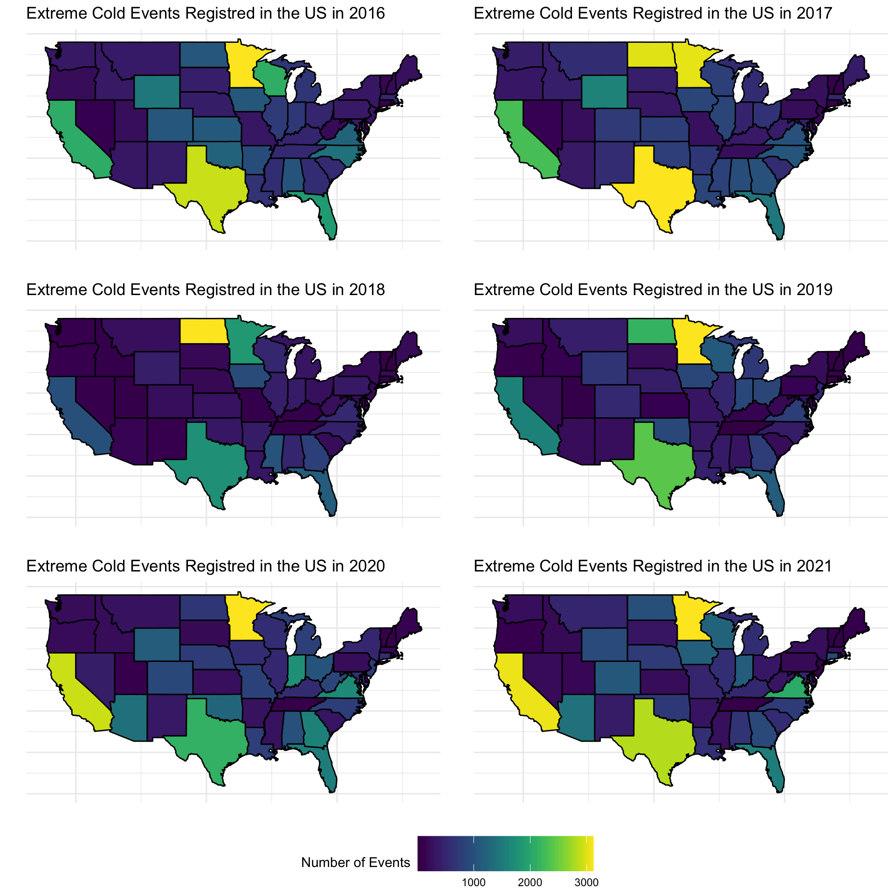
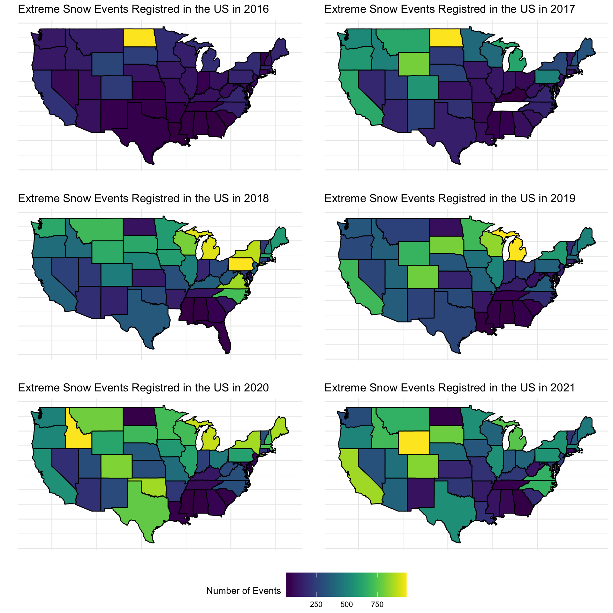

An Exploration of Extreme Weather Events in the US
A look into extreme weather events registered in the past five years in the US.
Author
Chiara Di Gravio
Published
December 31, 2022
The Data
In this blog post we are going to look at severe weather events recorded in the US between 2016 and 2021. The data used in this blog post were downloaded on December 21, 2022 from Kaggle. First, let’s have a quick look at the data. There are approximately 7.5 million of events recorded (7,479,165 to be exact) by 1,973 weather stations across the US and 14 variables. A look into the paper of Moosavi et al linked at the end of this page allows us to understand what each variable represents. Here are the variables we will be looking at:
Type. This is a factor with 7 levels: severe-cold (temperatures \(\leq\) 23.7C), fog, hail, rain, snow, storm (this involves rain and winds), and precipitation (anything else that is not classified as rain or snow).
Severity. This is a factor indicating the severity of a weather event. For this analysis we are going to consider only the events classified as heavy or severe.
StartTime(UTC). Date indicating when the event started
TimeZone. This is a factor with 4 levels indicating the US time zones: Eastern, Central, Mountain and Pacific
LocationLat. Latitude
LocationLng. Longitude
City
State
Numbers and Trends of Severe Events Across the US
First, we are going to look at weather trends in the last five years. Of the seven initial types of weather events, there were no severe precipitation and hail events; thus, from now on we will only be looking at cold, fog, rain, snow and storm. For ease of reading the y-axis in the plot we divide the total number of events by 1,000. Here are a couple of interesting things about the plot below:
Fog was the most common severe events in all of the last five years, followed by extreme cold and rain
There is a big increase of registered fog events between 2018 and 2019. In the same year, a big decrease in rain event was registered. Wondering if something changed in the classification of events?
Code
# load packageslibrary(data.table)library(ggplot2)library(viridis)library(usdata)library(ggpubr)library(knitr)# import datadat <-fread("WeatherEvents_Jan2016-Dec2021.csv")# only take severe eventsdat.severe <- dat[Severity %in%c("Severe", "Heavy")]# create a variable start yearsetDT(dat.severe)[, StartYear :=format(as.Date(`StartTime(UTC)`), "%Y")]# create a variable indicating the number of severe events by year. Get the start yearevents <- dat.severe[, .(NumEventYearType = .N/1000), by =c("StartYear", "Type")]ggplot(events, aes(x = StartYear, y = NumEventYearType, color = Type, group =1)) +geom_point() +geom_line() +facet_wrap(.~Type, scales ="free") +labs(x ="Year", y ="Number of Events (per 1,000)", title ="Number of Severe and Heavy Weather Events Across the US") +theme_minimal() +theme(legend.position ="bottom") +scale_color_viridis(discrete =TRUE)

How the number of severe weather events change over time across the US. The number of fog events show a sharp increase between 2018 and 2019. Total number of yearly events was divided by 1,000 for ease of representation.
Next, we are going to add an extra layer to the plot above by looking at weather trends by time zones in the last five years. The drop in the number of rain events we have seen in the plot above was registered in all the time zones but the US Pacific, while we can see that the number of fog events increased in all time zones between 2018 and 2019.
Code
area <- dat.severe[, .(NumEventAreaType = .N/1000), by =c("StartYear", "Type", "TimeZone")]ggplot(area, aes(x = StartYear, y = NumEventAreaType, color = Type, group =1)) +geom_point() +geom_line() +facet_wrap(Type~TimeZone, scale ="free", ncol =4) +labs(x ="Year", y ="Number of Events (per 1,000)", title ="Number of Severe an Heavy Weather Events Across the US") +theme_minimal() +theme(legend.position ="bottom") +scale_color_viridis(discrete =TRUE)

How the number of severe weather events change over time across the 4 US timezones. Total number of yearly events was divided by 1,000 for ease of representation.
Next, let’s add a finer layer to our plots and map the number of severe events by State and time. In all the plots a dark purple States are those with a lower number of events, while yellow and green States are those with higher number of events.
Starting with fog events it is clear that Texas is the State where most fog events are registered followed by California. Overall, there were not insanely crazy trends, but the number of fog events registered is quite constant across time in each State.
Code
# events by time, type and lat and longitudineevents.states <- dat.severe[, .(NumEventYearType = .N), by =c("State", "StartYear", "Type")]# convert States abbreviation to complete namesevents.states$region <-tolower(usdata::abbr2state(events.states$State))# map of US states (continguos US only)us <- ggplot2::map_data("state")# merge by stateus <- dplyr::inner_join(us, events.states, by ="region")# function to create the plotsplot.weather <-function(year, type){ggplot(subset(us, StartYear == year & Type == type)) +geom_polygon(aes(x = long, y = lat, group = group, fill = NumEventYearType), color ="black") +theme_minimal() +theme(axis.ticks =element_blank(), axis.text =element_blank(), legend.position ="bottom", legend.key.size =unit(1, 'cm'))+labs(x ="", y ="", title =paste("Extreme", type, "Events Registred in the US in", year)) +scale_fill_viridis(name ="Number of Events") }years <-2016:2021event.list <-unique(us$Type)p.events <-list()for(i inseq_along(event.list)){ p <-list()for(j inseq_along(years)){ p[[j]] <-plot.weather(year = years[j], type = event.list[i]) } p.events[[i]] <-ggarrange(p[[1]], p[[2]], p[[3]], p[[4]], p[[5]], p[[6]], ncol =2, nrow =3,common.legend =TRUE, legend="bottom")}
Code
p.events[[1]]

Total number of extreme fog events recorded in each US State in the last five years.
Second, let us move to extreme rain. Again the number of rain events are similar within each state across time. It is interesting how little rain California gets compared to the amount of fog. Also, Florida is one of the States where the majority of rain events are recorded. A guess is that hurricane season might have had an impact of this number.
{#| fig-width: 10} #| fig-height: 10 #| fig-cap: Total number of extreme rain events recorded in each US State in the last five years. #| cap-location: margin p.events[[2]]
Thus, let us look at extreme cold. As expected the States with extreme cold events tend to be those closer to the Canadian border (Michigan and Minnesota stood out from this map).
Code
p.events[[3]]

Total number of extreme cold events recorded in each US State in the last five years.
Then comes the snow. There are no extreme snow events recorded in Tennessee in 2017 and in Louisiana in 2018, and like for the extreme cold the northern States are those that record the higher number of events. It is striking, however, how much the number of snow events increase from 2016 to 2021.
Code
p.events[[4]]

Total number of extreme snow events recorded in each US State in the last five years.
Finally, the extreme storms. Here we go back to the trend we have seen for other weather events: the number of extreme storm event does not change within each state across time (with the exception of Texas where the number of extreme storm events increase between 2016 and 2021).
Code
p.events[[5]]
Total number of extreme storm events recorded in each US State in the last five years.
Which Cities Got the “Worst” Weather?
The table below shows the top 10 cities in the US where the highest number of heavy and severe weather events are recorded. This is a top 10 where most of the people might not want to be part of!
There are three cities in Florida in the top 10 (again hurricane might be the big culprit here), but the city the the highest number of recorded severe weather events is Mullan, Idaho.
Code
cities <- dat.severe[, .(NumEventAreaType = .N), by =c("City", "State")]setorder(cities, cols =-"NumEventAreaType") kable(head(cities, 10), col.names =c("City", "State", "Number of Events"))
City
State
Number of Events
Mullan
ID
4971
Thompson Falls-West End
MT
4802
Sargents
NH
4775
Tampa
FL
4617
Jacksonville
FL
4588
South Beach
OR
4394
Lompoc
CA
4292
Panama City
FL
4056
Wolf Creek
OR
3960
Tillamook
OR
3671
Table 1: Top 10 cities recording extreme evetns
A short read on the climate Mullan, ID (thanks to Wikipedia) shows that Mullan tend to be really cold and snowy in the winter, nd a quick look at the data shows how 311 extreme snow events were recorded in five years (this is approximately 62 extreme events a year!)
Code
mullan <- dat.severe[City =="Mullan"]kable(mullan[, .(NumEventAreaType = .N), by =c("Type")],col.names =c("Type", "Number of Events"))
Type
Number of Events
Fog
4610
Cold
36
Snow
311
Rain
14
Extreme ecents recorded in Mullan, ID between 2016 and 2021